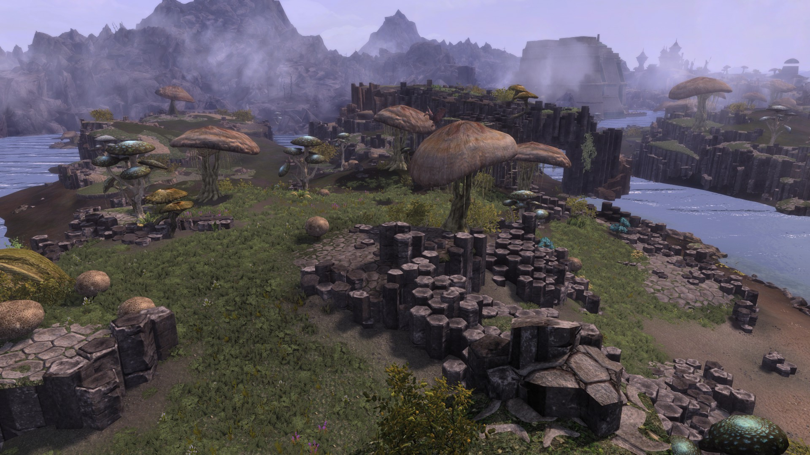

What is Skywind?
Skywind is a complete fanmade remake of Morrowind in the more modern Skyrim: Special Edition engine. Enjoy a completely revamped Morrowind with all the characters, stories, and quests that you loved from the original.
What’s Changed in Skywind?
Everything! The entire game has been rebuilt from scratch. There are all new 3d models, concept art, voice acting, level design, sound effects. https://tesrskywind.com/gallery/

How to Help
Skywind is made by fans and volunteers all for completely free. They do it solely for the love of the game. If you’re interested in helping please look through the available tasks and send in an application. https://tesrskywind.com/volunteer/
How to play Skywind?
In order to play Skywind upon its release you will need to own both Morrowind and Skyrim: Special Edition in order for Skywind to work.